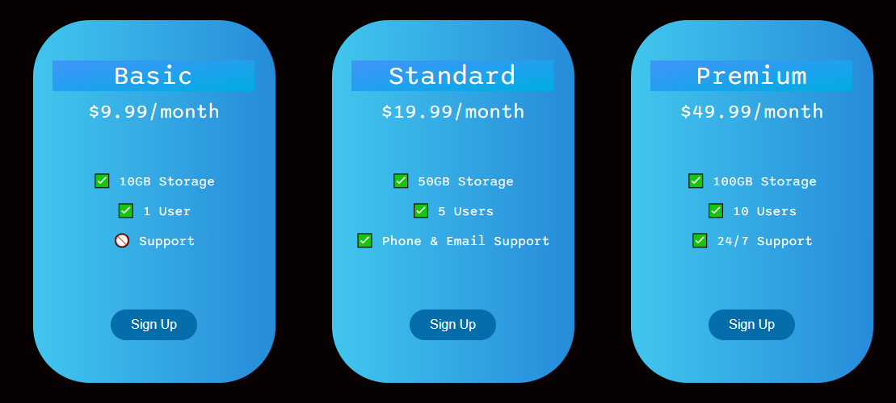
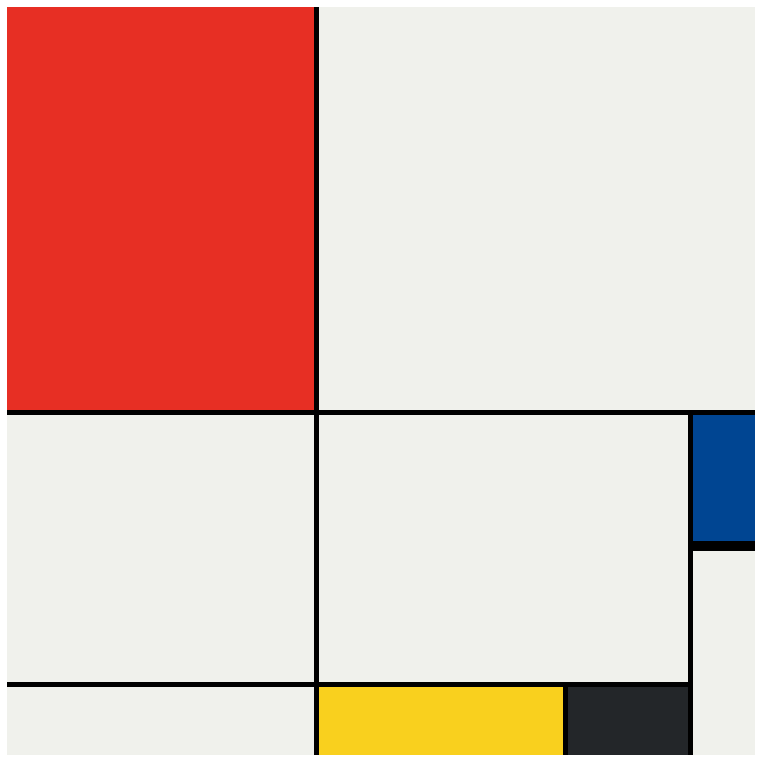
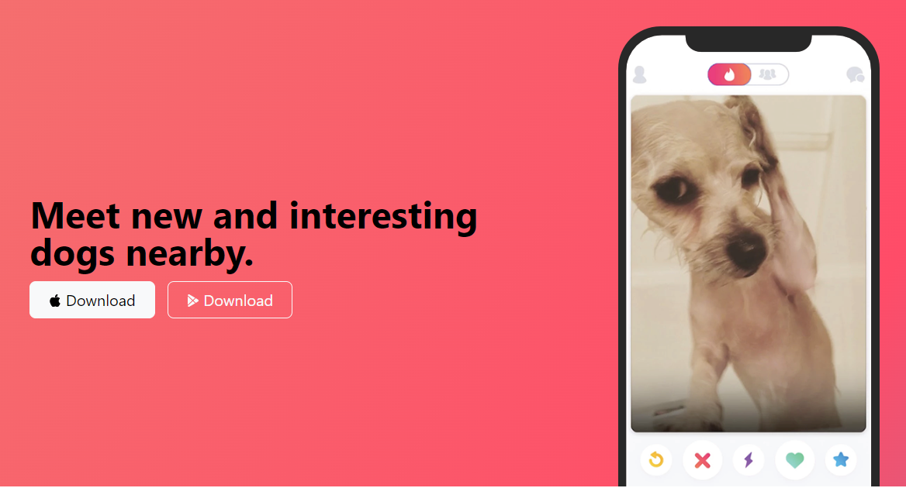

I'm Josué Fonseca
I'm passionate about technology and innovation and like to be always leaning a new thing.

Skills
- Technologist in Network Engineering - State University of Goiás(2017-2019)
- Notion in Data Base
- Notion in Programming
- HTML and CSS
- Quick solver problems
- Organization skills
- Quick learner
Hobbies
- Learning Languages
- Video Games
- Gym
Work Experience
N1, N2 and N3 Support Analyst - Departement of the IT from city hall
April 2022 - Currently
- Troubleshooting problems related to routers, switches and computer networks
- Configuring routers and access points
- Network cable management
- Servers maintenance
N1 Support Analyst - Sonda | IT Services and Solutions for Companies
May 2021 - March 2022
- Installing programs
- Configuration of printers and scanners
- Programs guidances
- Suggesting programs to resolve problems
- Forwarding problems to other service levels such as N2 and N3
- All service was based on the ITIL version 4 framework
N1, N2 and N3 Support Analyst - Vila São José Bento Cottolengo
August 2018 - November 2019
- Computer maintenance
- Installing programs
- Configuration of printers and scanners
- Program guidelines
- Suggesting programs to solve problems
- User management with Active Directory
- Firewall Management (SonicWall)
- Structured cabling
- Backup of systems and configuration of switches as VLAN's
Projects so Far
Pricing Table

Mondrian Painting

TinDog Startup

My Contact Details
- email@email.com
- +000099999-9999
- Street Farland, Number 0, City from a Country